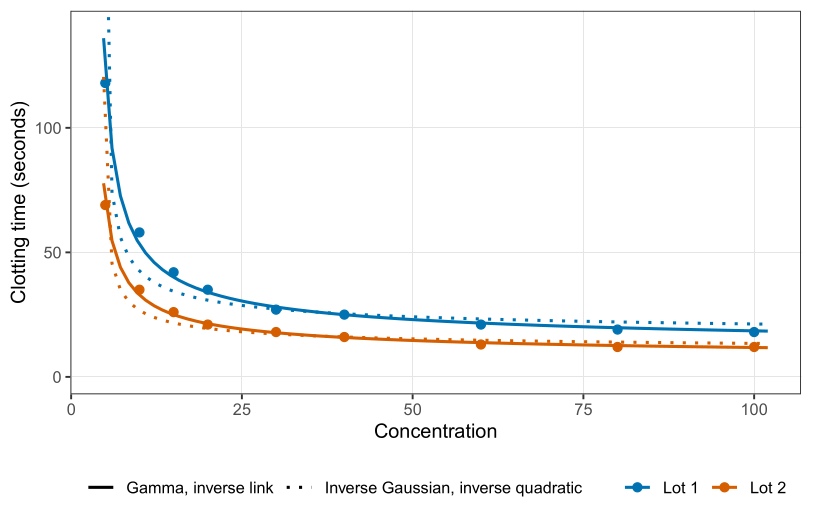
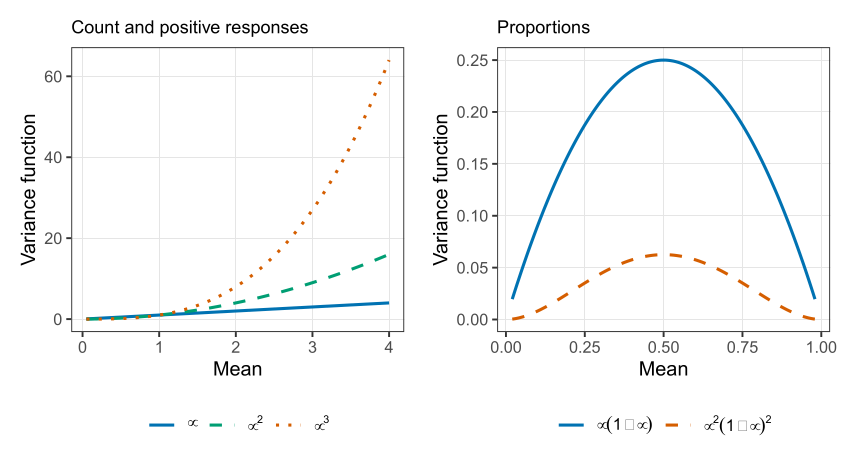
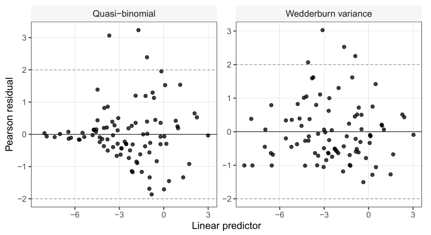

Underdispersion, positive responses, and quasi-likelihood
Part of Generalised linear models · 6 questions on this topic · What links here
Underdispersion, positive responses, and quasi-likelihood

| Part | Generalised linear models |
| Chapter | 3 of 6 in this part |
| Previous | Standard errors, and models for counts |
| Next | Categorical responses |
| Questions | 6 (3 practice, 3 concept) |
| Definitions | Quasi-score and quasi-likelihood |
| Figures | 3 |
The previous chapter stopped at the reason for reparameterising the Conway–Maxwell–Poisson by its mean. This chapter fits that model, then moves to positive continuous responses, and then to variance functions that are not the variance of any exponential family we have named.
Bids for a bankrupt firm
Cameron and Johansson (1997) recorded the number of takeover bids received by 126 US firms between 1978 and 1985. The covariates split into three groups. Defensive actions by the target: a lawsuit (leglrest), a proposed change in asset structure (rearest), a proposed change in ownership structure (finrest), and an invitation to a friendly third party, a white knight (whtknght). Characteristics of the firm: the bid premium (bidprem), the percentage of stock held by institutions (insthold), book value in billions (size), and its square. And one indicator for Department of Justice intervention (regulatn).
After those covariates, the counts are tightly bunched. A Poisson mean of 7 would happily produce anything from about 3 to 13. These firms, when the fit said 7, mostly produced 6, 7, or 8. That is underdispersion, which neither the Poisson nor the negative binomial can represent. The mean-parameterised Conway–Maxwell–Poisson can.
The R package that fitted it was withdrawn from CRAN in 2022, ahead of a replacement that did not arrive. The fit given here is a MATLAB fit of a log-linear mean. There is no formula interface. You build {\color{blue}\boldsymbol{X}} yourself: a column of ones and the nine covariates, 126 rows. The call returns the coefficient vector, the dispersion \nu, the implied rates \lambda(\mu,\nu), the maximised log-likelihood, and standard errors for \boldsymbol{\beta}. The estimates, standard errors, and ratios are
| term | estimate | std. error | z |
|---|---|---|---|
| intercept | 0.9897 | 0.4352 | 2.27 |
| legal defence | 0.2679 | 0.1228 | 2.18 |
| asset restructure | -0.1732 | 0.1547 | -1.12 |
| ownership change | 0.0677 | 0.1743 | 0.39 |
| white knight | 0.4813 | 0.1317 | 3.66 |
| bid premium | -0.6849 | 0.3075 | -2.23 |
| institutional holding | -0.3679 | 0.3466 | -1.06 |
| size | 0.1793 | 0.0476 | 3.77 |
| size squared | -0.0076 | 0.0025 | -3.05 |
| regulation | -0.0376 | 0.1302 | -0.29 |
The estimated dispersion is \hat\nu=1.754. Because \nu>1, the counts are tighter than a Poisson with the same mean, by the convention of this parameterisation.
The legal-defence coefficient is the easiest sentence. Two firms with the same size, the same premium, and the same other actions, one of which sues and one of which does not, differ by 0.2679 on the log-mean scale. The firm that sues is estimated to receive \exp(0.2679)=1.31 times as many bids. The ratio of estimate to standard error is 2.18, which clears 2 and so sits past the usual two-sided 5% cutoff on the z scale. The same reading applies to every other row. Size enters as a curve: the linear term is positive and the square is negative, so the mean rises with book value and then bends back. A one-line slope for size would hide that bend.
Why the underdispersion is plausible is the same selection story as the mines, in a different market. A private person cannot bid for a large firm. The pool of possible bidders shrinks as the target grows, and for the largest targets the count is often zero or one. Conditionally on the covariates, the count is more deterministic than a Poisson process. Later in this book, \nu=1 will be tested formally. For now the point is that the mean is on the same scale as a Poisson log-linear model, so the coefficient 0.2679 means the same kind of thing.
Positive continuous responses
A clotting time, or an insurance claim amount, is continuous and cannot be negative. Three links are in ordinary use: \begin{align*} \log\mu_i&={\boldsymbol{X}}_i^\top\boldsymbol{\beta}, & \mu_i&=\exp({\boldsymbol{X}}_i^\top\boldsymbol{\beta}),\\ \mu_i^{-1}&={\boldsymbol{X}}_i^\top\boldsymbol{\beta}, & \mu_i&=1/({\boldsymbol{X}}_i^\top\boldsymbol{\beta}),\\ \mu_i^{-2}&={\boldsymbol{X}}_i^\top\boldsymbol{\beta}, & \mu_i&=1/\sqrt{{\boldsymbol{X}}_i^\top\boldsymbol{\beta}}. \end{align*} The log link is the one with a direct reading, and it keeps \mu positive for every finite predictor. It is not the canonical link for the gamma or the inverse Gaussian, so R will not choose it unless you name it. The canonical link for the gamma is the inverse link. The canonical link for the inverse Gaussian is the inverse quadratic. Both of those are only positive when {\boldsymbol{X}}^\top\boldsymbol{\beta}>0. If the linear predictor changes sign, the inverse link produces a negative mean, and the square root in the inverse quadratic leaves the reals. It is sometimes said that the inverse quadratic “ensures” non-negativity because a complex mean is not a mean. That is a restriction on the domain of \boldsymbol{\beta}, not a guarantee for every coefficient vector. You still have to keep the linear predictor positive.
The two families are written by their mean and variance, so the shape-rate and shape-scale arguments do not have to be reconstructed: \begin{align*} Y_i\mid {\boldsymbol{X}}_i&\stackrel{\mathrm{ind}}{\sim}\mathrm{Gamma}\!\left(\mu_i=\mu({\boldsymbol{X}}_i^\top\boldsymbol{\beta}),\ \mathrm{Var}=\phi\mu_i^2\right),\\ Y_i\mid {\boldsymbol{X}}_i&\stackrel{\mathrm{ind}}{\sim}\mathrm{InverseGaussian}\!\left(\mu_i=\mu({\boldsymbol{X}}_i^\top\boldsymbol{\beta}),\ \mathrm{Var}=\phi\mu_i^3\right). \end{align*} The mean function \mu(\cdot) is whichever inverse link you chose. It is not tied to the family. The score for a gamma regression has the same shape as the Bernoulli and Poisson scores, (y-\mu)\mu'/\mathrm{Var}, and showing that is an exercise rather than a new idea. Intervals are again z intervals from the inverse Fisher information.
Clotting times, three ways
Return to the clotting data. Two lots of thromboplastin, log dose, clotting time in seconds. If a dose of zero is imagined to mean no clotting agent at all, an infinite mean time is the story the inverse link tells, and it is the default for family = Gamma. Fit an interaction, so each lot has its own intercept and its own slope:
need <- function(pkg) {
if (!requireNamespace(pkg, quietly = TRUE)) {
install.packages(pkg, repos = "https://cloud.r-project.org")
}
suppressPackageStartupMessages(library(pkg, character.only = TRUE))
}
need("faraway")
data(clot, package = "faraway")
clot$Y <- clot$time
clot$logdose <- log(clot$conc)
clot$lot.f <- factor(clot$lot, levels = c("one", "two"), labels = c("1", "2"))
summary(glm(Y ~ lot.f * logdose, data = clot, family = Gamma)) Estimate Std. Error t value Pr(>|t|)
(Intercept) -0.01655 0.000866 -19.13 2.0e-11
lot.f2 -0.00735 0.001678 -4.38 0.00063
logdose 0.01534 0.000387 39.63 8.9e-16
lot.f2:logdose 0.00826 0.000735 11.23 2.2e-08Dispersion \hat\phi=0.00213, three iterations, AIC 63.2. The first lot is the baseline factor level. Its mean is \mu_1=(-0.01655+0.01534\,\mathrm{logdose})^{-1}. The second lot adds both coefficients. The intercept becomes -0.01655-0.00735=-0.0239, and the slope becomes 0.01534+0.00826=0.0236, so \mu_2=(-0.0239+0.0236\,\mathrm{logdose})^{-1}. On the inverse scale the second lot starts lower and climbs faster. Because the mean is the reciprocal, that is a higher curve which then falls faster as dose increases. The interaction line has t=11.2 and a p-value of 2\times 10^{-8}. The slopes are not parallel. The dispersion is tiny: these points sit close to the curve, as a controlled clotting experiment should.
The default inverse-Gaussian fit uses the inverse-quadratic link. The coefficients are on a different scale, of order 10^{-3} rather than 10^{-2}, because they sit inside a square root. The AIC is 110.5, much worse than 63.
In Figure 1 the inverse-link gamma curves pass through the points, and the inverse-quadratic curves compress too quickly and then flatten too soon.
Now force the inverse Gaussian to use the inverse link, the same mean function as the gamma:
need <- function(pkg) {
if (!requireNamespace(pkg, quietly = TRUE)) {
install.packages(pkg, repos = "https://cloud.r-project.org")
}
suppressPackageStartupMessages(library(pkg, character.only = TRUE))
}
need("faraway")
data(clot, package = "faraway")
clot$Y <- clot$time
clot$logdose <- log(clot$conc)
clot$lot.f <- factor(clot$lot, levels = c("one", "two"), labels = c("1", "2"))
summary(glm(Y ~ lot.f * logdose, data = clot,
family = inverse.gaussian(link = "inverse")))The coefficients come back to -0.0178, -0.0074, 0.0158, 0.0083, close to the gamma fit, with AIC 60.7. The two mean curves lie on top of each other. The standard errors move, because the variance function changed from \phi\mu^2 to \phi\mu^3.
The link chooses the mean curve. The response distribution mainly chooses the standard errors. Those two pieces are essentially orthogonal: you may pair a scientifically sensible link with a distribution that matches the scatter, and neither choice is doing the other’s job.
That separation is what Huang and Rathouz (2017) give in general. It is why families and links can be mixed, and why a worse AIC for the inverse quadratic is a statement about the link, not a mystery of the inverse Gaussian. Other positive families exist and are not in the default glm list: inverse gamma, lognormal, Weibull with the second parameter fixed. A custom family needs a log-likelihood, or, as the next section shows, sometimes only a mean and a variance.
Quasi-likelihood
The normal, the gamma, and the inverse Gaussian already have a dispersion \phi. The Poisson and the binomial do not: the variance is a function of the mean alone. Putting a free \phi in front, \mathrm{Var}(Y)=\phi\mu \qquad\text{or}\qquad \mathrm{Var}(Y)=\phi\, np(1-p), is the quasi-Poisson and quasi-binomial we have already used for dead time, spurts, and pseudo-replication. In general, any non-negative function V gives a variance \phi V(\mu). Most of those choices are not the variance of an exponential family. They describe the data. They do not, by themselves, prescribe a distribution you can simulate from. That is the whole of the name quasi.
Definition 1 If \mathrm{Var}(Y)=\phi V(\mu), the quasi-score in the mean is S_\mu=\frac{Y-\mu}{\phi V(\mu)}. If the mean depends on covariates through \mu({\boldsymbol{X}}^\top\boldsymbol{\beta}), the quasi-score in \boldsymbol{\beta} is {\boldsymbol{S}}_{\boldsymbol{\beta}} =\frac{Y-\mu}{\phi V(\mu)}\,\mu'({\boldsymbol{X}}^\top\boldsymbol{\beta})\,{\boldsymbol{X}}.
Two properties make S_\mu behave as a score. The expectation is zero, because \mathrm{E}(Y-\mu)=0 and the rest does not depend on Y. And the variance equals the negative expected derivative:
\mathrm{Var}(S_\mu)=\frac{1}{\phi^2 V(\mu)^2}\mathrm{Var}(Y)=\frac{1}{\phi V(\mu)}
=-\mathrm{E}\!\left(\frac{\partial S_\mu}{\partial\mu}\right).
Every GLM score has the shape of {\boldsymbol{S}}_{\boldsymbol{\beta}}. Not every choice of V comes from a GLM. Inside an exponential family the variance function determines the family, so V(\mu)=\mu is the Poisson and V(\mu)=np(1-p) is the binomial. A free \phi takes you outside that class. You can still invent a probability model with the same moments, for example a normal with variance \phi\mu, but that normal is not a distribution on the counts, and it is not an exponential family in \mu because \mu appears in both the mean and the variance. Fitting it needs its own algorithm. The quasi-score does not: glm only solves {\boldsymbol{S}}_{\boldsymbol{\beta}}={\boldsymbol{0}}.
The quasi-log-likelihood is the integral of that score, Q(\mu;y)=\int_y^{\mu}\frac{y-t}{\phi V(t)}\,\mathrm{d}t, and the sample version is the sum of Q(\mu_i;y_i). The integral is rarely needed. Estimation and standard errors use the score and its variance. The integral is what you need if you want something to play the role of a likelihood in an AIC comparison. Because \phi factors out of {\boldsymbol{S}}_{\boldsymbol{\beta}}, the estimate of \boldsymbol{\beta} does not depend on \phi. Estimate the mean first. Then estimate the dispersion by moments, exactly as \sigma^2 is estimated after a normal line: \hat\phi=\frac{1}{n-p}\sum_{i=1}^n\frac{(y_i-\hat\mu_i)^2}{V(\hat\mu_i)}. \qquad(1) The covariance of \hat{\boldsymbol{\beta}} is \hat\phi times the inverse of the weight matrix built from (\mu')^2/V(\mu).
Leaf blotch
Wedderburn (1974) is the paper that introduced this. Ten barley varieties were grown at nine sites, one proportion per cell: the percentage of leaf area covered by blotch, Rhynchosporium secalis. The variety and site numbers in the table are labels, ordered roughly from less blotch to more. They are not numeric covariates. Treating “variety 2” as twice “variety 1” is the same mistake as averaging student ID numbers.
There is one observation per variety–site pair, so a full interaction cannot be fitted. The mean model is main effects only, on the logit of the proportion p_{ij}: \log\frac{p_{ij}}{1-p_{ij}}=\alpha_i+\beta_j, \qquad p_{ij}=\frac{\exp(\alpha_i+\beta_j)}{1+\exp(\alpha_i+\beta_j)}. A structured interaction would be allowed if a reason for that particular combination existed before looking at the table. It does not. The variance starts as quasi-binomial, \phi p(1-p). The proportions are averages of many leaves from the same plot, so the trials are not independent Bernoulli draws. Pseudo-replication makes \phi much smaller than 1.
need <- function(pkg) {
if (!requireNamespace(pkg, quietly = TRUE)) {
install.packages(pkg, repos = "https://cloud.r-project.org")
}
suppressPackageStartupMessages(library(pkg, character.only = TRUE))
}
need("faraway")
data(leafblotch, package = "faraway")
leafblotch$proportions <- leafblotch$blotch
summary(glm(proportions ~ factor(site) + factor(variety),
data = leafblotch, family = quasibinomial))The dispersion printed for this fit is \hat\phi=0.089. The intercept, -8.05, is the log-odds for variety 1 at site 1. Every other coefficient is a contrast with that baseline. After adjusting for site, varieties 2, 3, and 4 are not distinguishable from variety 1 at the 5% level (variety 2 even has t=0.21). Varieties 5 through 10 are worse. Variety 1 is the most resilient in this fit, with 2, 3, and 4 in the same neighbourhood.
The Pearson residual is (y_i-\hat\mu_i)/\sqrt{\hat\phi V(\hat\mu_i)}. Plotted against the linear predictor, these residuals are not a flat band. The quasi-binomial variance compresses the small fitted values too hard and does not compress the middle enough. Wedderburn’s replacement is V(\mu)=\mu^2(1-\mu)^2, still multiplied by a free \phi. Squaring p(1-p) shrinks the variance even more near 0 and 1, and it leaves relatively more variance in the middle, which is what the residual plot was asking for.

No exponential family has this variance function. It is a description. It is not a quasi-binomial. There is nothing to call it except a quasi-likelihood with this V.
It is not a built-in family. You supply V and its derivatives to glm. A proportion of exactly zero makes the quasi-deviance integral diverge, so the block below prints the variety contrasts and their standard errors, which do not need that integral.
need <- function(pkg) {
if (!requireNamespace(pkg, quietly = TRUE)) {
install.packages(pkg, repos = "https://cloud.r-project.org")
}
suppressPackageStartupMessages(library(pkg, character.only = TRUE))
}
need("faraway")
data(leafblotch, package = "faraway")
leafblotch$proportions <- leafblotch$blotch
wedderburn <- quasi(
link = "logit",
variance = list(
varfun = function(mu) mu^2 * (1 - mu)^2,
validmu = function(mu) all(mu > 0 & mu < 1),
dev.resids = function(y, mu, wt) wt * (y - mu)^2 / (mu^2 * (1 - mu)^2),
initialize = expression({
n <- rep.int(1, nobs)
mustart <- pmax(0.001, pmin(0.999, y))
}),
name = "mu^2(1-mu)^2"
)
)
fit <- glm(proportions ~ factor(site) + factor(variety),
data = leafblotch, family = wedderburn)
co <- coef(summary(fit))
round(co[grep("variety", rownames(co)), ], 3)After that fit, the contrasts with variety 1, and a common standard error of 0.47 because the design is balanced, are
| variety | 1 | 2 | 3 | 4 | 5 | 6 | 7 | 8 | 9 | 10 |
|---|---|---|---|---|---|---|---|---|---|---|
| contrast | 0 | -0.47 | 0.08 | 0.95 | 1.35 | 1.33 | 2.34 | 3.26 | 3.14 | 3.89 |
Variety 2 is now the most resilient, slightly ahead of variety 1. Varieties 1, 2, and 3 remain the resistant group: variety 4 is about two standard errors up, and from variety 5 the gap is clear. The ranking moved a little. The standard errors moved more, from about 0.6 down to 0.47, and the residual plot is closer to a constant-width scatter.

For a proportion that is actually continuous, a Pearson plot is a fair diagnostic. For a binary or count response the same plot bands, because the observation can only sit on a lattice, and that banding is not evidence against the mean. We will handle discrete residuals later.
Once the mean is specified, any non-negative variance function V(\mu) gives a quasi-score that glm can solve. Whether that V is the variance of a named distribution is a separate question. A descriptive fit is allowed. It is not a generator of new data.
From the gamma interaction fit, recompute the second lot’s intercept and slope by adding the baseline coefficients to the
lot.f2coefficients, and write \mu_2 as a reciprocal.Show \mathrm{E}(S_\mu)=0 and \mathrm{Var}(S_\mu)=1/(\phi V(\mu)) from the definition of S_\mu, using only \mathrm{E}(Y)=\mu and \mathrm{Var}(Y)=\phi V(\mu).
Explain why \hat{\boldsymbol{\beta}} in a quasi-model does not depend on \phi, and why \hat\phi in Equation 1 is computed only after \hat{\boldsymbol{\beta}}.
The leaf-blotch design has one observation per variety–site cell. Say why a product interaction
site * varietyis not available, and why that is different from refusing the interaction on scientific grounds.
Questions on this topic
Open a question to attempt it. Its worked answer is folded away at the bottom of the page.
| Question | Source | Answer |
|---|---|---|
| Q45. Gamma regression from the exponential-family form | Practice set | ✓ |
| Q47. Overdispersion and quasi-Poisson inference | Practice set | ✓ |
| Q55. Gamma GLM for reaction times | Practice set | ✓ |
| C23. Positive continuous responses | Concept check | ✓ |
| C27. Quasilikelihood | Concept check | ✓ |
| C28. Dispersion | Concept check | ✓ |
What links here
Pages (2)
- Standard errors, and models for counts — via underdispersion, quasi-likelihood
- Marginal models, and two responses at once — via quasi-score
Questions and answers (5)
See also
- Articles from this chapter: Quasi-score and quasi-likelihood
- All generalised linear models chapters
- Glossary and index
- Distribution sheet and formula lookup